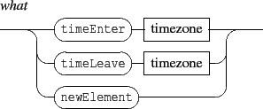

Events currently watchable are:

A time zone is defined by 2 dates expressed as rational values (i.e. with 4 integers).
The newElement event is supported at scene level only and triggered when a new element is added to the scene.